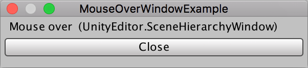

EditorWindow.mouseOverWindow
public static EditorWindow mouseOverWindow;
Description 描述
The EditorWindow currently under the mouse cursor. (Read Only)
mouseOverWindow can be null if there is no window under the cursor.
See Also: focusedWindow.

Move the mouse over other Unity windows to automatically focus them.
// mouseOverWindow example // // The window appears in front of the editor. When you move // the cursor over a Unity object the type of it will be // shown in this new window.
using UnityEngine; using UnityEditor;
public class MouseOverWindowExample : EditorWindow { string mouseOver = "Nothing...";
[MenuItem("Examples/mouseOver")] static void Init() { GetWindow<MouseOverWindowExample>("mouseOver"); }
void OnGUI() { GUILayout.Label("Mouse over:\n" + mouseOver); if (GUILayout.Button("Close")) { this.Close(); }
mouseOver = EditorWindow.mouseOverWindow ? EditorWindow.mouseOverWindow.ToString() : "Nothing..."; }
void OnInspectorUpdate() { if (EditorWindow.mouseOverWindow) { EditorWindow.mouseOverWindow.Focus(); }
this.Repaint(); } }